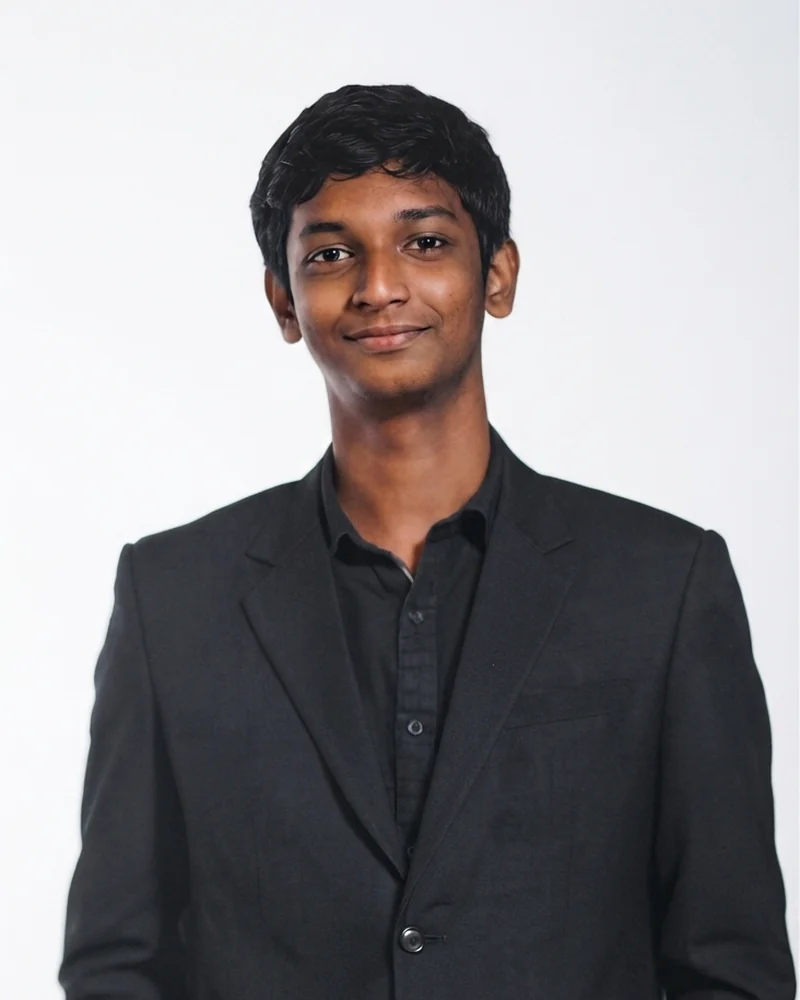
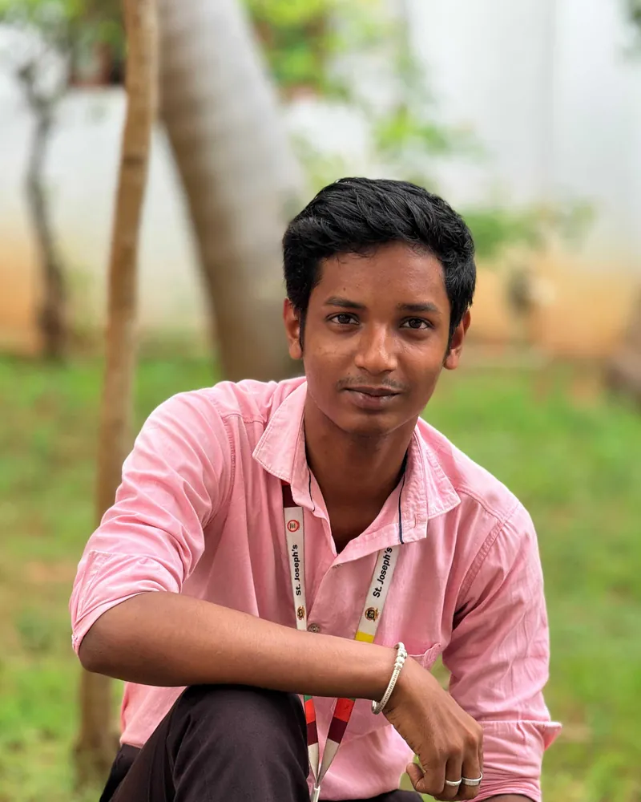

Product designerChennai, IndiaOpen to workDesign intern at Zuper

me, 2026drag the stickers!
Hi, I’m Snip. I hold the scissors while Rajesh decides what to cut.
you
Good design is often what you take away.
I’m a product designer in Chennai. I design complex B2B workflows at Zuper, then trim them down until only what people need is left. I design it, and I can build it.
Interaction designPrototypingUX researchDesign systemsB2B workflowsAccessibilityInformation architectureUsability auditsFigmaReact and TailwindInteraction designPrototypingUX researchDesign systemsB2B workflowsAccessibilityInformation architectureUsability auditsFigmaReact and Tailwind
01 / Selected work
Work08
Eight projects, each one about what I took away. Hover a card to flip through its screens.
hover a card
How I work
Most of the work is taking things away.
Every project here moves through the same five steps. The fourth is the one I care about most.
01
Research
Audit what exists
Use the product like a real person, and talk to the people who do.
02
Problem
Find the real one
Name what is actually going wrong before drawing anything.
03
Explore
Try a few directions
Sketch quickly, and keep the ones that hold up.
04
Trim
Remove what doesn’t belong
Cut the extra step, the extra popup, the extra feature.
05
Review
Test it against feedback
What survives review is what ships.
02 / Playground
Playground
A pile of my life: sketches, events and mentoring. Drag things around, or flip through the project screens on the little viewer.
go on, throw things aroundHackomania 2024MentoringPortrait, in progressPlaying Gandhi jiFirst Zuper event: OnamPaper wireframesReading timeWarm Beats
less, but better
aim: under 5 clicks
a popup is a last resort
ask why, then cut
delete first, polish later
PLAYGROUND

Rajesh, Chennai
03 / About
A designer who also builds.
I studied Computer Science and tried hard to like coding. Python was great, and C and Java interested me too, but in my second year I knew it wasn’t my path.
I wanted work where my passion and my professionalism could live together. I’ve always loved sketching, drawing, portraits and sculpture, and I wanted that colour and creativity in my career. Data analysis and design were my two routes. I tried both, and design was the one I found interesting, so I tried my luck, and I became a designer.
Design work across SaaS, telemedicine, e-commerce, food import and export, and health-tech taught me to start from the user’s real problem, and to keep the developer in mind from the first sketch.
He sketches, sculpts and designs. I just hold the scissors.
04 / Experience
Where I’ve worked
Most recent first.
Jul 2026 – Oct 2026
Zuper
Product Design Intern
Zuper Connect on iOS and iPad, Job Chat and a web-app experience audit. I’m also redesigning the Zuper Labs website as Labs OS, which is in development.
Prelude Workspace, my redesign of the team’s Prototype Dashboard: deployed, and used by other designers.
2026
Infotact Solutions
Design Associate and UI/UX Designer Intern
Telemed Connect, a healthcare booking product, and an omnichannel fashion e-commerce app, with Prasanthi, Sujeevana and Diganta.
Telemed booking in under five clicks, from the doctor list.
Mar 2025 – Jun 2025
FOOZ Food Global LLP
UI/UX Designer Intern
Designed most of the main website for a business-to-customer import and export platform: home, hero, product details, About, Contact and more.
Learned to design experiences for users, not just websites.
Oct 2024 · about a month
Brainwave Solutions
Designed a healthcare app, reimagining a Practo-style experience.
Built my Auto Layout and prototyping skills.
2023 · about a month
YBI Foundation
Data analytics with Python and Google Colab, including a Naive Bayes classifier for women’s clothing reviews.
Learned how Python applies to everyday problems.
05 / Questions
Things people ask
?
A recruiter, probably
What do you design best?
Rajesh
Complex B2B workflows: a call transfer, @mentions in a chat, a whole-product audit at Zuper. I find the real problem, then cut whatever doesn’t help.
?
An engineer
Do you build, or just design?
Rajesh
Both. At Zuper I redesigned the team’s Prototype Dashboard as Prelude Workspace, which is deployed and used by other designers. At hackathons I built a Telegram moderation bot and programmed the hardware for a face-recognition attendance system. I keep the developer in mind from the first sketch.
?
A designer
How do you use AI?
Rajesh
As a second pair of eyes, never as the last word. In the audit, some first-pass AI findings were wrong, so I checked them by hand and flagged the uncertain ones.
?
A hiring manager
What are you looking for?
Rajesh
A product design role on a team building complex, useful software. My internship at Zuper ends on 26 October.
06 / Also
Beyond the case studies
Things I built, entered and led.
Deployed and in use
Prelude Workspace
My redesign of the Prototype Dashboard, which my teammate Raghavendra designed: a 3D grove where each project is a tree. Deployed and used by other designers.
In development
Zuper Labs OS
I’m redesigning the Zuper Labs website as an OS-style interface inspired by paper clips, after first exploring a 3D concept. Zuper managers liked the concept, and one suggested a pixel-art, Game Boy-style direction.
AIVF No-Code AI Hackathon, 2024 · Finalist
Telegram moderation bot
A bot that detects and blocks nudity and abusive content in groups. I designed and built it.
PEC HACKS, 2024 · Finalist
Face-recognition attendance
An offline, Wi-Fi based attendance system. I was the designer, the hardware programmer and the presenter.
Smart India Hackathon, 2024
Dropout prediction
A student dropout prediction and analysis concept for a Gujarat Government problem statement, built with a team as designer and developer. It grew into my final-year research on AI and ML.
Chapter President, 2026
PeerHub at St. Joseph’s
Led a chapter of 40+ members with a five-person core team, reaching about 200 to 300 people.
Say hi. I’ll hold the scissors.
07 / Contact
Let’s make something with less in it.
I’m looking for a product design role on a team building complex, useful software.
Undoing a call transfer, without losing the customer
Role
Product Design Intern
Team
Lead product designer, iOS engineer, iOS developer, engineering manager
Platform
iOS and iPad
Status
In development
What I started with
A call screen with seven controls, recording shown twice, and a transfer you couldn't take back.
What I trimmed
The waveform bar, the duplicate Record, Hold in conferences, and extra pop-ups.
What remained
One 3×2 grid. While Agent 2 rings, Transfer becomes Cancel transfer, right where the thumb already is.
Research
Finding what was wrong
At Zuper, an AI agent answers customers first. When it can't help, a human takes over and may transfer the call to a colleague. I captured every call state on iPhone and iPad and compared transfers in Aircall, RingCentral, Zoom and the native dialers.
The problem
A transfer with no way back
While Agent 2's phone rang, Swap, Transfer Now and Merge were greyed out. If the customer didn't want to wait, the only exit was ending the call for everyone. Scroll on: the screen changes with the story, and everything I cut lands in the cut list.
Cut list
Nothing cut yet.
Before
Recording, shown twice
A Record button, plus a waveform bar taking a whole row.
Before
Dead buttons while Agent 2 rings
Three greyed-out controls and no way to stop the transfer.
Option A, chosen
Transfer becomes Cancel transfer
Same spot, new meaning while Agent 2 rings. Nothing new to find.
Option C, explored
Hold becomes Cancel
Confusing, since Hold still matters while the customer waits.
Option D, explored
Confirm before End
Protects the customer, but adds a step at the worst moment.
Trim
Cancelled, and back with the customer
Agent 2 stops ringing, the customer comes off hold, nobody is dropped.
Cut: the dead-end transfer
Trim
A calmer call screen
One 3×2 grid. Speaker, Mute and Record stay in row 1. A small ● Rec sits by the timer, and Keypad replaces More on mobile.
Cut: the waveform bar, the duplicate Record, More on mobile
Trim
Conference, without Hold
Hold is blocked once calls merge, so it went. Pop-ups that added taps were parked.
Cut: Hold in conference, extra pop-ups
The decision
Where does Cancel transfer live?
Option
How it works
Trade-off
A · Transfer becomes Cancel transferChosen
Same spot, new meaning while Agent 2 rings
Engineering handles the state change; the agent taps where they just tapped
B · A Cancel button under the avatar
A separate, very visible button
The screen gets busier; the grid and the button compete
C · Hold becomes Cancel
Reuse the Hold slot
Confusing, since Hold still matters while the customer waits
D · Confirm before End
Ask "End for everyone?"
Protects the customer, but adds a step at the worst moment
Review
What review changed
Speaker and Mute stay in row 1 everywhere, after design review.
The dev team removed redundant status text, since the banner already shows it.
Hold can't work in a merged conference, so it was removed; Record stayed.
The result
Drag to compare
BeforeAfter
iPad landscape: the caller on the left, controls on the right.
What I'd do differently: push for a more flexible recording control, like Wispr Flow's floating bar, and test Cancel near the avatar with real agents.
Customers on every platform said the same thing: too complex, too many clicks. Nobody had mapped where.
What I found
64 findings. Most weren't one-offs: 12 patterns ran through the whole product.
What remained
One ranked map: severity on every finding, the 12 patterns, and a top-five list up front.
The project
Walking the whole product
An audit is a patient walk through the whole product. I went through every module like a real user, asked PMs and QA what they already knew, checked it all against UX principles, and ran an AI pass as a second pair of eyes.
Try it
Pick a module to see its flaws
Jobs
Try it
Twelve patterns through the whole product
Pick a pattern and the modules it runs through light up on the map above. Fix it once, and every one of them improves.
Try it
Four flaws, before and after
Review
I checked the AI, too
The AI pass caught things we'd missed, but some first-pass findings were wrong: the calendar wasn't empty, jobs just loaded 5+ seconds late with no loader. I corrected them by hand and flagged uncertain ones as "needs a human check".
The result went to the team ranked by severity, with the top five up front: AI deep links that hang, status colours, the calendar, numbers that don't add up, and findability.
What I'd do differently: talk directly to customers who struggle, and write the issues from their words.
@mentions to people outside a chat reached nobody, and nothing said so.
What I trimmed
My own first idea: a popup that stopped the conversation every time.
What remained
The message sends, and a quiet note only the sender sees offers to add the missing people.
The problem
Tagged, but never told
You could @mention someone who wasn't in the chat, and the message went out, but they were neither notified nor added. Slack already handles this by asking whether to add them. I asked why Job Chat couldn't.
Cut list
Nothing cut yet.
Before
The mention that went nowhere
Five people tagged. None of them would see it.
My first version
Ask before sending
Add & Send, or Send only. Clear, but it blocks the conversation every time.
Chosen, after PM feedback
A quiet note instead
The message sends right away. A note only the sender sees waits until they're ready.
Cut: the blocking popup
Alternative
The slim banner
The lightest option, but easy to miss.
The form
They're in, and everyone can see it
A green system message, a pattern the chats already had, shows who joined and why.
Review
One rule, two patterns
The product manager's feedback: on web, a popup interrupts every conversation. So web got the quiet note. On mobile and tablet, a note can scroll out of view, so a short confirmation sheet stays.
Mobile: confirmation sheet
Mobile: added via mention
The result
Drag to compare
BeforeAfter
What I learned: the same rule can need different patterns per platform.
Kern, a placement tracker, Zuper hiring assessment, 2026
Less to remember, more to act on
Role
Researcher, UX and product designer
Team
Just me
Time
1 day, including 2 interviews
Status
Prototype, shown in a demo
What I started with
Placement news scattered across WhatsApp, Excel and Gmail, so milestones got missed.
What I trimmed
A calendar view, success charts and a resume builder.
What remained
One list of what needs you in the next 24 hours.
Research
Two interviews, three problems
To ground the design, I interviewed two active placement candidates, a final-year student and a recent graduate. The same three things came up both times.
The status black hole. Candidates wait indefinitely for results, with no timeline and no word from recruiters.
Pipeline volatility. Hiring flows are unpredictable, and follow-up rounds get added with little warning.
The visibility gap. Notifications are inconsistent, so students miss deadlines unless they check several systems every day.
Each pain point became one decision:
What they said
What I built
“Rejected candidates often won’t even receive an official email. You just wait indefinitely.”
A “Days Spent in Stage” count, with an estimated “Safe-Zone” response window.
“Unexpected and unscheduled rounds or tests after an interview cause massive annoyance.”
A “Flex-Pipeline Builder” with a tap to insert an unscheduled round.
“Inconsistent notifications mean we miss things unless we manually log into portals daily.”
A “Today’s Focus” first screen: a strict, chronological urgency stack for the next 24 hours.
The problem
Not short of data, short of one place to look
Placement tracking doesn’t fail because people lack information. It fails because the information is spread across channels that don’t talk to each other. That fragmentation overloads people, and milestones slip.
The idea behind Kern
Move from managing data to a chronological urgency stack, one that favours recognition over recall.
The shape
Four screens, one path
The whole product is one straight line: a first screen of what’s urgent, a list of every application, the detail of one, and an editor for when the process changes.
The system and the user flow.
Cut list
Nothing cut yet.
Screen 1
Open the app, see what’s due
Anything closing within 24 hours sits at the top, with a count of applications in a waiting phase.
Cut: the calendar. A short list ends decisions faster than a dense grid.
Screen 2
Every application, one filter away
Each job shows its stage and how long it has been there. Filter chips: All, In-Flight, Offers, Archived.
Cut: success charts. Showing rejection rates mid-season only adds stress.
Screen 3
Say how long the wait usually is
“Typically responds within 7 days. You are on Day 3.” Contextual data turns open-ended waiting into something to plan around.
Cut: a resume builder. Students already keep their files in Drive.
Screen 4
Add the round nobody warned you about
Tap “Insert Unscheduled Round” to place a stage like “Round 2.5” between the standard milestones.
Scope
What I cut, and why
Kept
✓
Today’s Focus (urgency stack)Immediate view of items closing within 24 hours.
✓
Stage progression trackerGranular visibility of the time spent in each stage.
✓
Flex-Pipeline BuilderDynamic editing to adapt to real-time changes.
Cut on purpose
✕
Calendar view integrationA chronological urgency list reduces decision fatigue much faster than a dense calendar grid.
✕
Historical analytics and success chartsShowing rejection metrics or success rates during an active placement season creates counterproductive stress.
✕
Resume builder and document managementAvoided feature creep: students already have file storage they trust, like Drive.
Review
Where it’s weakest
Manual upkeep
Kern relies on people updating their own stages. Parsing email automatically would cut the friction, but for version one I kept users in control of data that changes without warning.
It needs to be opened
The design only works if someone opens the app. Making Today’s Focus the first screen puts the priorities in front of them the moment they do.
How I used AI
To stress-test edge cases in the workflow and to tidy the structure of this write-up. The mechanics, the micro-copy and the features came from the interviews.
Team target: under five clicks. Four from the list.
Telemed Connect, web, Infotact Solutions, 2026
Five clicks to the doctor
My role
UX and visual design: screens, UI kit, components
Team
With Prasanthi and Sujeevana
Timeline
My screens were built and presented on 18 May 2026
Status
Presented, not shipped
What I started with
Booking averaged 7.2 clicks in the research, plus a forced detour through the doctor’s profile.
What I trimmed
The detour, the overloaded screens and the extra steps.
What remained
Search, Book Now, date, time, confirm: five clicks from the dashboard, four from the doctor list.
Research
Looking at what already exists
The project opens with a competitor review of telemedicine patient dashboards: Practo, Apollo 24|7, Tata 1mg and PharmEasy. It found cluttered home screens, heavy cross-selling, steep booking friction, and small type that older patients struggle with.
It also put a number on the problem: an average of 7.2 clicks to book, against a team target of under five. The primary goal it set was to make booking and joining obvious, fast and accessible for all ages.
Competitor research. Scroll inside the frame.
The problem
Two patients, one shared frustration
Lakshmi Devi is 67, a retired teacher with low tech literacy. She wants large text and simple, guided steps. Rahul Sharma is 29, a software engineer who wants to book in as few steps as possible.
Lakshmi Devi
Rahul Sharma
Their journeys feel different, but they end in the same place: too many steps in the booking, and a forced extra step to open the doctor’s profile. For Lakshmi, unclear camera and microphone permissions made it worse.
Journey map: elderly patient
Journey map: busy professional
Personas and journey maps: Sujeevana.
The shortest route
Mapping the way to a booking
The information architecture keeps four places at the top: Dashboard, Search, Appointments and Records. The booking flow runs Home, Search, Doctor list, Book Now, Date and time, Confirm, Booked. The cart stays optional.
Information architecture
User flow
Problems found, and the improvements they led to.
Information architecture and user flow: Prasanthi.
Trim
What I cut
Problem found
What changed
Where it shows
Forced trip to the doctor’s profile
Book Now sits on every doctor in the list
Doctor search
Too many steps to book
Date, time and confirm on one screen: four clicks from the list, five from the dashboard
Booking
Confusing navigation
Four places at the top: Dashboard, Search Doctors, Appointments, Records
Every screen
Overloaded screens
Cards carry only what someone needs to choose a doctor
Home, search
Hard to find an available doctor
Search first, with filters for specialisation, location and fee
Doctor search
No clear call to action
One high-contrast primary button per screen
All screens
The screens, one cut at a time:
Cut list
Nothing cut yet.
Home
Start with today
The next appointment and a Join Video Call button come first, then prescriptions, quick actions and a health summary.
Cut: a confusing navigation structure.
The big change
Book Now, right from the list
Search, filter by specialisation, location or fee, and book from the result. No profile page in between.
Cut: the forced trip to the doctor’s profile.
Booking
Date, time, confirm
The date, the time slot and an optional note about symptoms share one screen, with one clear button at the bottom.
Cut: the extra booking steps.
The call
Say why, then ask once
A short prompt explains the camera and microphone request, with a single Allow Access button.
Cut: confusing permissions.
Mobile
Eleven screens, including the unhappy paths
The mobile version covers onboarding and login, a home screen led by the next appointment, doctor search, and a booking that takes a date, a time and one tap to confirm.
The unhappy paths are designed too: a home screen and a records tab with nothing in them yet, a booking that asks you to pick a time slot, and a form that flags an invalid email.
OnboardingLoginHomeHome, no appointmentsHealth recordsRecords, emptyFind doctorsBook appointmentBooking, errorPatient detailsConfirmed
Mobile screens: Prasanthi.
Built to hold
A kit so it stays consistent
The screens come from a UI kit and a component library: a royal-blue primary, a type scale, spacing, and a note on WCAG AA colour and medical standards.
UI kit. Scroll inside the frame.
Component library. Scroll inside the frame.
The result
One screen to book
Search, Book Now, date, time, confirm: five clicks from the dashboard, four from the doctor list.
Omni Fashion, mobile app, Infotact Solutions, 2026
A shorter way to the checkout
My role
UX and visual design: wireframes, screens, components
Team
Infotact Solutions team, with Prasanthi, Sujeevana and Diganta
Platform
Mobile app
Status
Designed, with one idea saved for next time
What I started with
Wireframes with a style quiz, a personal feed, nearby-store stock and quick pay.
What I trimmed
The style quiz and the nearby-store check, as the deadline closed in.
What remained
A clear path from home to order confirmation. The nearby-stock idea is mocked up for next time.
Wireframes
Everything started as grey boxes
The wireframes set out the whole app: a three-step style quiz that curates a personal feed, filters, a product page that shows stock at a nearby store, a cart that stays in sync across devices, and a quick-pay checkout.
Style quizHomeList and filtersProductCartCheckout
The screens
From grey boxes to a working path
Cut list
Nothing cut yet.
Screen 1
Welcome, and one button
One clear Get Started, with Skip in the corner.
Cut: the three-step style quiz from the wireframes.
Screen 2
Suggestions first
A search bar, category chips for Men, Women, Kids and Ethnic wear, a New Arrivals banner and a “Perfectly suits you” grid.
Screen 3
Search without losing your place
Category circles and recommendations sit right under the search bar.
Screen 4
One product, one decision
A large photo, rating, price, size chips and a single Add to cart.
Left for later: a “stock at a nearby store” check.
Screen 5
Check before paying
Items with size and quantity, a note that delivery is free on a first order, and the price details.
Screen 6
Address, payment, order summary
A shipping form and three ways to pay. The summary matches the cart total.
Screen 7
Order placed
A green tick, the order ID, the estimated delivery and a Track Order button.
Screen 8
A home for the account
Orders, shipping addresses, payment methods, settings and support, in one list.
What I left out
Two ideas that didn’t make it
The wireframes were richer than the screens I delivered. Two ideas dropped out: the style quiz, and a check for stock at a nearby store. As the deadline got close, we put our time into the core path from home to order instead.
The nearby-store idea was mine. I talked it through with Sujeevana and Prasanthi, and they agreed it was worth having. We just ran out of time for it.
Afterwards
The nearby-stock idea, mocked up
After the delivery, I designed the idea so it isn’t lost. A small green card says how many are left at a nearby store and offers same-day pickup. This frame was made after the project and isn’t part of what we delivered.
FOOZ Food Global LLP, a business-to-customer import and export platform
My pages
Home, hero, product details, About, Contact and more
Timeline
March to June 2025
The brief
A storefront for organic tea, whole spices, rice and essential oils.
What I made
Home, hero, product details, About, Contact and other pages, plus the components behind them.
One detail
A delivery tracer: five stages, a carrier, a tracking ID and a way to reach support.
The brief
Pure, authentic, easy to follow
FOOZ imports and exports organic tea, whole spices, premium rice and essential oils, and sells them straight to customers. The company is built around problems in the organic-food chain, like inconsistent quality, adulteration and middlemen. The storefront had to feel pure and authentic, and to make the road from product to doorstep easy to follow.
The file holds 14 pages: home, shop, product details, checkout, delivery tracking, order confirmation, four account pages, About, Blog, Contact and a 404.
The pages
From the front door to the doorstep
Home
A calm front door
A warm hero, one red call to action, and four promises underneath: quick delivery, a 30-day money-back guarantee, 24/7 help and flexible payments.
Home
New arrivals, then three big doors
Just In shows three products with their prices and an Add to cart button. Below, whole spices, premium rice and herbal oils sit in large photo tiles.
Shop
Filter, then choose
Category, price range and customer rating sit beside a grid of product cards.
Product
Everything to decide, on one screen
Sizes, stock status, details and shipping information, with the cart in a side drawer.
Checkout
Three steps, one at a time
Contact, shipping and payment open one after another, with the order summary beside them.
The detail
Where is my order?
A five-stage timeline with the carrier, the tracking ID and the latest updates. A note covers deliveries running more than three days late.
Confirmation
Thank you, and what next
The order number, delivery date, items and address, with Track Order and Continue Shopping.
Account
Everything in one account
A dashboard with active subscriptions, total orders and loyalty points, and the next delivery.
The result
And on a phone
The mobile home page, scrolled from top to bottom.
Scroll inside the frame.
What I learned: to build an experience for users, not just a website.
Back to all work
Seven pieces, from a call transfer to a food storefront.
He teaches, sketches, hosts and plays Gandhi. I’m tired just watching.
Ullas Trust, mentoring, art and events
Beyond the screen
With
Ullas Trust, as a higher-education scholar
Mentoring
Government and government-aided school students
Focus
Personal development and confidence
Also
Hosting events, role play, NGOs and sketching
Ullas Trust
Learning, and passing it on
I’m an Ullas Higher Education Scholar. Alongside my degree, I’ve been mentoring students from government and government-aided schools, who have little knowledge of personal development. The goal is simple: help them build their confidence.
Mentoring school studentsAnother session
On stage
Hosting and speaking
I host many events, and I like looking after the whole thing, from the stage to what happens behind it.
At the podium
Hackathons and events
Badges from the road
Every ID card in this pile is a hackathon, a technical event or a non-technical one I took part in. Some, like CRYPTRIX, I helped organise.
ID cards from hackathons and eventsHackomania 2024
Roles and NGOs
Role play, books and NGOs
I often play Mahatma Gandhi in role plays and dramas. I also spend time at NGOs with the people and children there, and I read whenever I can.
Playing Gandhi ji in a role playReading in a library
Sketches
Sketches, drawings and portraits
Sketching, drawing, portraits and sculpture are my passions, and I want that colour and creativity in my professional work too.
Baby KrishnaWarm BeatsA portrait in progressSaraswati, on a whiteboardPaper wireframes for the attendance app
Every project is a tree. No spreadsheets were harmed.
Prelude Workspace, Zuper, 2026
Projects as trees in a 3D grove
Role
Redesigned the Prototype Dashboard
Original
Designed by my teammate Raghavendra
Platform
Web, in 3D
Status
Deployed, and used by other designers
What I started with
The Prototype Dashboard, designed by Raghavendra.
What I changed
I redesigned it as Prelude Workspace, a grove where each project is a tree.
Where it is now
Deployed, and in use by other designers at Zuper.
The grove
Open it and you walk into a forest
Prelude opens on a grove. Each project is a tree with its name beneath it: here, zuper labs and Rejuvenation. You move with the keyboard: arrow keys to select a tree, Enter to open it, and WASD to look around.
A bar along the top holds the project switcher, a Grove and Focus toggle and a New project button. A dock at the bottom holds home, search, notifications, settings and sound.
The grove: one tree per project
Inside a project
Team, comments and versions
Open a tree and a panel slides in. It shows the team, the comments for the current version, with replies, and a list of versions, each with a status such as Draft. A New version button adds the next one.
A project: team, comments and versions (comments blurred)